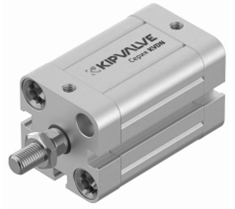
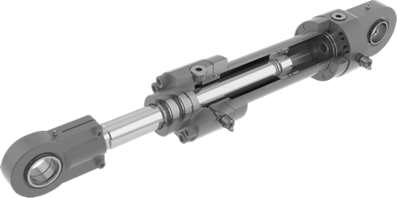
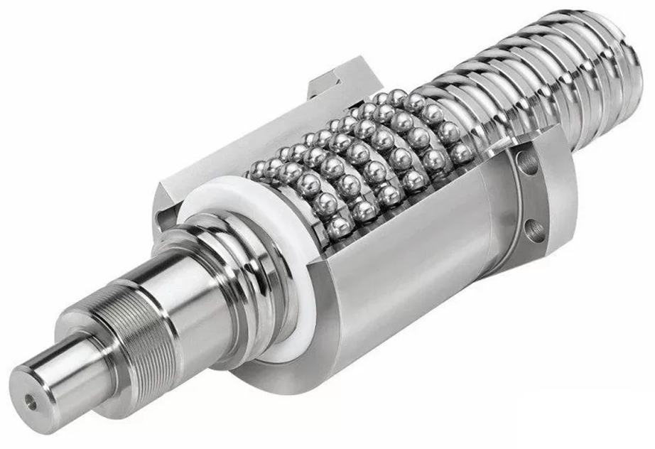
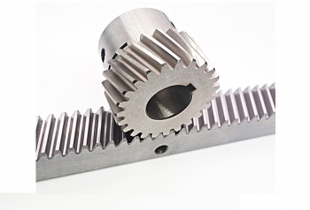

РАЗРАБОТКА РЕКОМЕНДАЦИЙ ПО ПРОЕКТИРОВАНИЮ
ЛИНЕЙНОГО ПЛАНЕТАРНО-ЦЕВОЧНОГО ПРИВОДА
Чиркин А.В.
Актуальность. Линейные приводы





Актуальность. Характеристики существующих приводов
Эта формула $a+b=3$ должна быть красивойА это еще лучше: $|(1/2=0,5)$
Тут мне весело$√☺=☻$и тут тоже $√{Ы/к}=б1$
Найди букву написанную формулой
Найди букву напис$а$нную формулой
Цель работы
разработка метода определения геометрических размеров элементов линейной
планетарно-цевочной передачи (ЛПЦП), оценка нагрузки на всех элементах передачи и определение
параметров передачи, при которых она обладает наименьшими габаритами.
Задачи исследования:
- Разработка метода геометрического синтеза ЛПЦП, определение размеров зацепления.
- Разработка метода определения нагрузок в зацеплении, подшипниках и направляющих ЛПЦП.
- Экспериментальная верификация предложенного метода расчета нагрузок в ЛПЦП.
- Разработка метода проектирования ЛПЦП оптимизированной по габаритам.
Область исследования
диссертации соответствует пунктам 2 и 4 паспорта научной специальности 2.5.2.
Машиноведение: «теория и методы проектирования машин и механизмов, систем приводов, узлов и деталей
машин»; «повышение точности и достоверности расчетов объектов машиностроения, разработка
нормативной базы проектирования, испытания и изготовления объектов машиностроения».
1. Предложен оригинальный тип передачи для преобразования вра-щательного движения в поступательное, совмещающий положительные осо-бенности существующих передач.
2. Предложен оригинальный метод определения геометрических па-раметров ЛПЦП, позволяющий определить размеры всех деталей, необходимые для их изготовления.
3. Предложен оригинальный метод для определения нагрузок во всех узлах линейной планетарно-цевочной передачи, позволяющий на стадии про-ектирования определить запас прочности передачи.
4. Экспериментально подтверждена методика определения сил, дей-ствующих в зацеплении линейной планетарно-цевочной передачи.